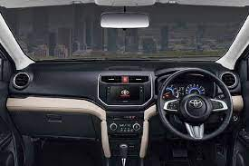
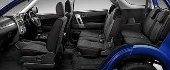
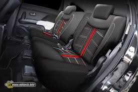
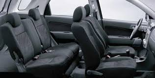

Toyota Rush
Rp500-600 Juta





Transmisi
Bahan bakar
Mesin
Tempat Duduk
Fitur terbaru bisa dilihat pada interiornya. Tombol ISS terletak di sebelah tombol Vehicle Stability
Control (VSC). Teknologi ISS digunakan untuk menghemat bahan bakar dengan cara mematikan mesin pada saat
kondisi mobil stasioner, misalnya di kemacetan lampu merah.
Sementara perubahan lain ada pada head unit bawaan Toyota Rush. SUV itu kini mempunyai fitur konektivitas ke hand
phone yang lebih canggih. Jika sebelumnya menyambungkan hp ke head unit perlu menggunakan Toyota Link, sekarang
hp bisa terkoneksi melalui Android Auto.
Artinya aplikasi seperti Google Maps, Whatsapp, dan sebagainya lebih mudah untuk diakses dan digunakan selama perjalanan.
Setelah mengerti mengenai spesifikasi bagian interior & eksterior Toyota Rush 2021, kini saatnya beralih ke
bagian performa. Toyota Rush 2021 hadir dengan mesin SUV kelas menengah. Hal ini menjadikan mobil ini memiliki
mesin berkapasitas yang tidak terlalu besar namun masih terbilang standar. Mobil ini berbekal dengan mesin 3SZ-VE
berkapasitas mesin 1.5 liter.
Selain itu juga sudah menggunakan 4 silinder segaris dengan 16 katup DOHC bersistem VVT-i. Dengan spesifikasi
tersebut, mampu menyempurnakan tenaga hingga mencapai 109 PS pada putaran mesin 6.000 rpm, serta torsi maksimal
14.4 Kgm.
Tenaga tersebut telah disalurkan melalui 2 varian transmisi yaitu manual dan otomatis dengan transmisi 4
percepatan. Untuk transmisinya sendiri menggunakan teknologi Electronic Fuel Injection sehingga lebih irit bahan
bakar. Selain itu kapasitas tangki bensin juga termasuk standar yaitu bisa menampung hingga 45 liter bahan bakar.
Toyota Rush 2021 hadir dengan desain yang gagah dan gahar sehingga menjadikannya sebagai salah satu mobil SUV
terbaik di Indonesia. Kelebihan mobil ini ada pada sektor spesifikasi dan fitur menarik yang akan membuat
penumpangnya semakin betah berada di dalamnya. Pihak Toyota sejak dulu memang sangat konsisten meluncurkan Rush
dengan desain dan fitur baru setiap periodenya.
Tentu saja setiap peluncuran selalu dibarengi dengan beberapa perubahan dan penyegaran dengan menambahkan fitur
canggih. Namun perubahan yang paling menonjol yaitu terletak pada bagian kabin. Terlebih untuk varian E yang
mendapat tambahan jok pada baris ketiga.
Dengan penyegaran ini, semua varian Toyota Rush 2021 mampu menampung hingga tujuh penumpang karena memiliki jok
hingga tiga baris. Selain itu produsen otomotif asal Jepang juga memberi fitur tambahan berupa kamera mundur.
Penasaran apa saja spesifikasi lengkap pada bagian interior & eksterior Toyota Rush 2021? Simak penjelasan lengkap berikut ini.